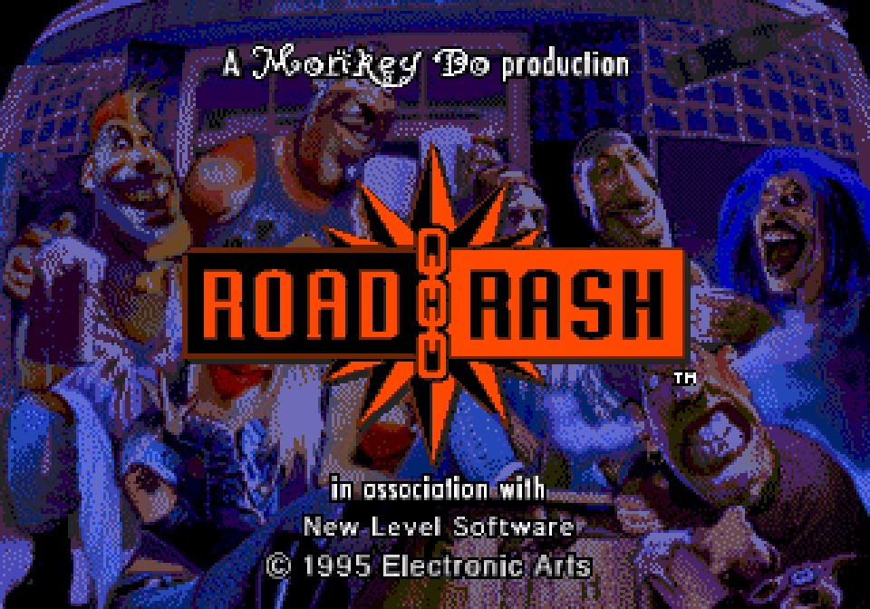
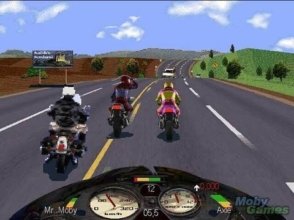
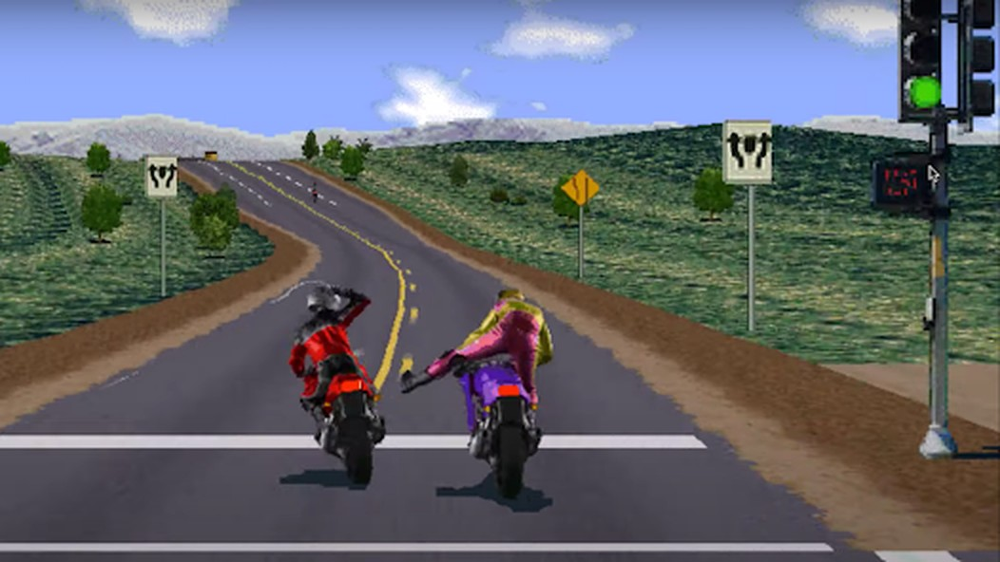
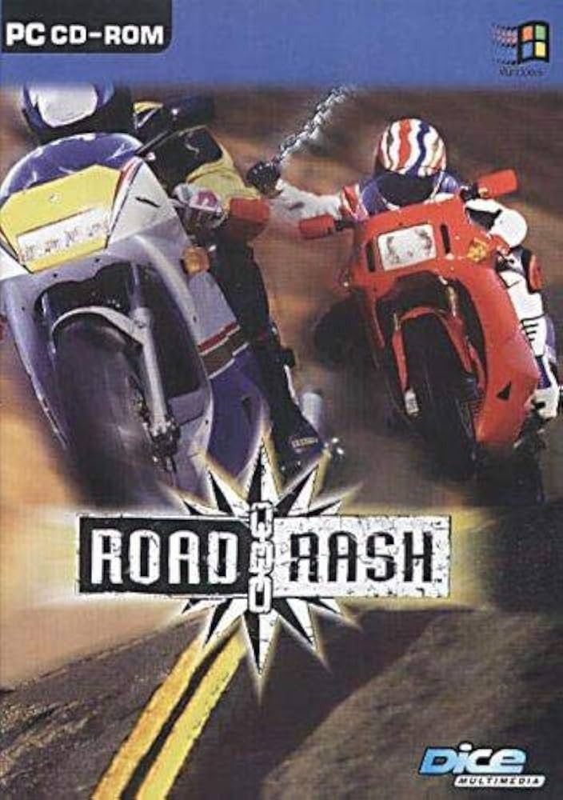

Trước khi biết đọc hết một câu tiếng Anh, tớ đã biết Road Rash.
Hồi đó tớ mới lớp 4, lớp 5 gì đó — và trong trí nhớ của tớ, đây có khi là một trong những con game đầu tiên chạy trên cái máy tính cà tàng của nhà tớ.
Cái đĩa thì khỏi nói. Cũ mèm, xước đủ đường, được đám trẻ con trong xóm truyền tay nhau như một món bảo vật — nhà nào cài xong lại chuyển sang nhà kế. Chẳng đứa nào đọc được cái tên "Road Rash" cho ra hồn, nên cả xóm thống nhất gọi nó bằng cái tên tự chế: đua xe cảnh sát. Giờ nghĩ lại thấy tên đó sai về mặt nội dung — mình đâu có đua với cảnh sát, mình bị cảnh sát dí — nhưng đúng tuyệt đối về mặt cảm xúc.

Nhìn bằng con mắt bây giờ thì game xấu xí và đơn giản lắm. Nhưng với một thằng nhóc tiểu học, cái màn hình đó là cả một xa lộ tự do: một chiếc mô tô, một con đường dài hun hút, và một đám đối thủ đang chờ bị đạp cho ngã lăn quay.
Vì Road Rash không phải game đua xe. À, nó là game đua xe, nhưng cái phần "đua" chỉ là cái cớ. Phần chính là đánh nhau trên yên xe: dùng chân đạp thằng chạy kế bên, vung gậy đập vào lưng đứa vừa vượt mặt, ép đối phương văng vào chướng ngại vật cho ngã lăn quay ra đường. Mỗi trận đua là một trận hỗn chiến máu lửa, vui như hội.

Rồi tới đặc sản của game: cảnh sát. Bị cảnh sát dí, thay vì ngoan ngoãn tấp vào lề như ngoài đường phố bình thường — thì game cho mình... đấm lại cảnh sát luôn. Mà bên trong đứa trẻ nào chả có sẵn một mầm nổi loạn. Được làm điều cấm kỵ nhất trong một thế giới không có hậu quả thật, đó là thứ khoái cảm mà một đứa nhóc tiểu học không diễn tả được thành lời, chỉ biết cười hét ầm nhà.
Chưa hết. Tông trúng người đi đường. Xe té thì nhân vật lồm cồm bò dậy, ba chân bốn cẳng chạy ngược lại chỗ cái xe nằm chỏng chơ, dựng lên, leo lên chạy tiếp — trong khi cả đám đối thủ vù vù vượt qua. Cái cảnh thằng người tí hon chạy chạy lại dựng xe đó, tụi tớ xem đi xem lại không biết bao nhiêu lần mà vẫn cười vỡ bụng.
Và game còn biết giữ chân người chơi đúng kiểu: thắng thì có tiền, có tiền thì unlock xe xịn hơn, vũ khí chiến hơn. Vòng lặp đơn giản vậy thôi mà hồi đó tụi tớ cày không biết chán.

Bản Road Rash tớ chơi trên PC năm 1996 thật ra là bản port từ bản 3DO năm 1994 — bản được coi là đỉnh cao của cả dòng game, do Electronic Arts làm. Còn dòng Road Rash thì khởi đầu từ tận 1991 trên máy Sega Genesis.
Có hai chi tiết mà mãi sau này tra lại tớ mới biết, và biết xong thì thấy tuổi thơ mình... buồn cười hơn hẳn. Một: đám nhân vật trong game là người thật được số hóa — mà không phải diễn viên chuyên nghiệp gì đâu, chính đội ngũ làm game thay phiên nhau mặc đồ vào đóng. Ông Randy Breen, đồng tác giả của game, chính là người đóng vai mấy tay cảnh sát — tức là bao nhiêu năm tụi tớ hăng say đấm cảnh sát, hóa ra là đấm thẳng vào mặt... cha đẻ của con game.
Hai: nhạc nền là nhạc grunge bản quyền xịn từ hãng đĩa A&M, có cả Soundgarden — thời 1994 mà đưa nhạc bản quyền của ban nhạc thật vào game là chuyện gần như chưa từng có, Road Rash được ghi nhận là game mở đường cho cả trào lưu đó. Tai thằng nhóc lớp 4 dĩ nhiên không biết Soundgarden là ai, chỉ thấy nhạc nghe rất "quậy", rất hợp không khí đấm nhau trên xa lộ.
Trong ký ức của xóm tớ, Road Rash tới trước cả Need for Speed — sau này tra lại mới biết Need for Speed bản đầu thật ra ra đời trước (1994, cũng của EA luôn), nhưng chuyện đĩa nào về xóm trước thì lịch sử thế giới không quyết định được, cái đó do mấy hàng đĩa lậu quyết định. Và trong cái lịch sử riêng của xóm tớ, "đua xe cảnh sát" là con game đua xe đầu tiên, và trong suốt một quãng dài, là con game đua xe nhất.
Nghĩ lại, cái làm Road Rash đọng lại không phải đồ họa hay tốc độ — mấy thứ đó game nào sau này chả hơn. Nó đọng lại vì nó cho một đứa nhóc tiểu học được hư một cách an toàn: đấm cảnh sát, tông người, quậy banh xa lộ, rồi tắt máy đi ăn cơm, vẫn là đứa con ngoan trong nhà. Có lẽ game hay là vậy — không phải dạy mình làm người tốt, mà cho mình một chỗ để xả hết mấy thứ không được làm ở ngoài đời.
Nói thật thà: dòng Road Rash đã chết hẳn từ lâu — EA bỏ rơi nó sau thập niên 90, không remake, không remaster, không có mặt trên Steam hay GOG. Bản PC 1996 giờ thuộc dạng abandonware, muốn chơi lại thì phải đi đường vòng qua mấy trang game cũ, mà cài được trên Windows đời mới cũng trần ai lai khổ — có khi cách dễ nhất lại là giả lập bản 3DO hoặc PS1. Cũng hơi buồn: một dòng game từng "nhất xóm" mà giờ muốn thăm lại phải lách qua khe cửa. Nhưng nghĩ kiểu khác, hồi xưa nó cũng đến với tụi tớ qua một cái đĩa xước truyền tay có chính chủ gì đâu — âu cũng là sống sao chết vậy.